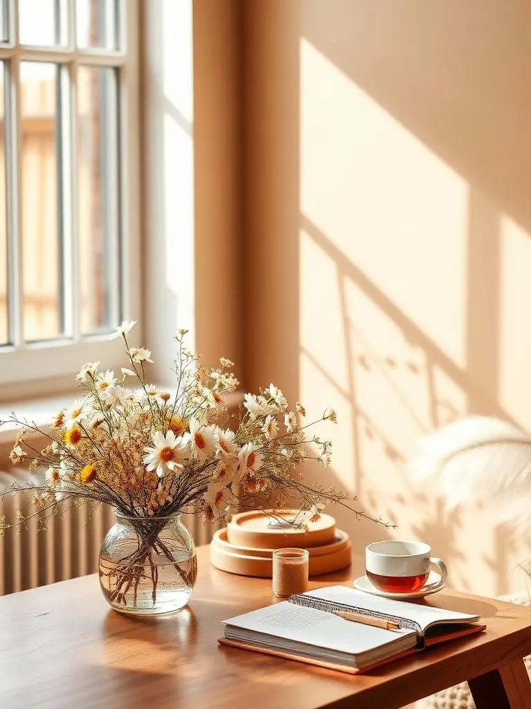
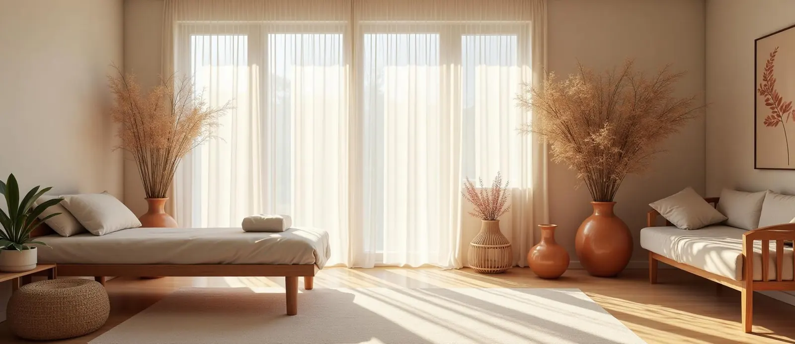

Our Story
Back to
yourself從色彩與花開始，回到自己
希望有一個空間，讓人可以慢下來，被理解、被傾聽。
說說花，是一個結合 Aura-Soma 色彩能量、永生花藝創作與手作祝福的療癒品牌。陪伴你認識自己、整理心緒，為重要的時刻留下溫柔而長久的記憶。
說說花誕生於對「溫柔陪伴」的相信。當人生走到轉彎處，當情緒無法被好好說出口，我們希望有一個空間，讓人可以慢下來。
在說說花，色彩不只是顏色，花也不只是裝飾，而是一段與自己對話、與生命和解的過程。